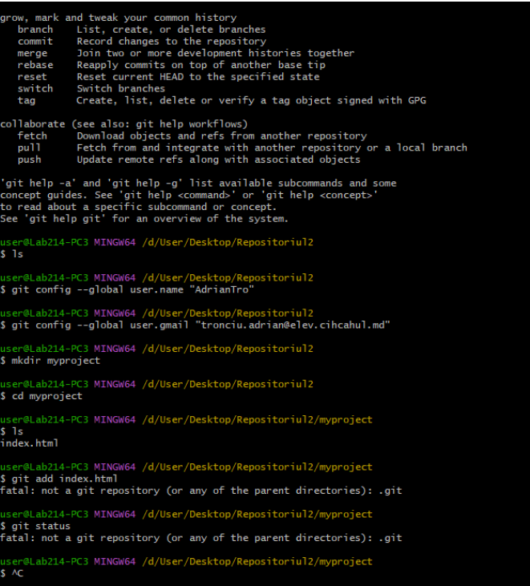
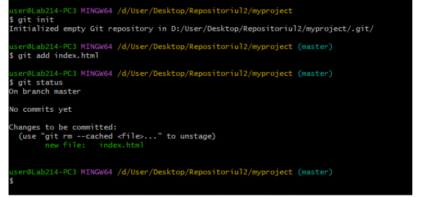
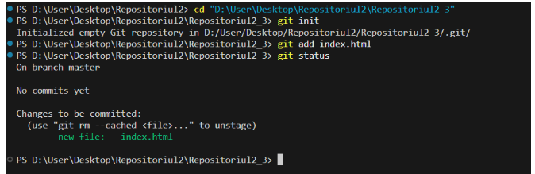

Despre Proiecte
  Git este un sistem de control al versiunilor extrem de popular, folosit pentru a urmări modificările în fișiere și a coordona munca între mai mulți dezvoltatori. Git permite lucrul în echipă fără riscul de a suprascrie munca altora și este indispensabil în proiectele moderne de software.
De ce să folosești Git
- Istoric complet al modificărilor: poți vedea exact cine a schimbat ce și când.
- Colaborare ușoară: mai mulți oameni pot lucra simultan la același proiect.
- Sigur și fiabil: Git păstrează copii locale ale codului pentru a preveni pierderile.
- Gestionarea ramurilor: poți dezvolta funcționalități noi fără să afectezi codul stabil.
- Automatizare și integrare: GitHub permite workflow-uri automate și integrare CI/CD.
Cine folosește Git
- Dezvoltatori software individuali
- Echipe de dezvoltare de la startup-uri până la corporații mari
- Studenți și profesori în IT
- Comunități open-source din întreaga lume
Potrivit statisticilor GitHub (2025), peste 100 de milioane de dezvoltatori folosesc Git, iar milioane de proiecte open-source sunt gestionate prin acest sistem.
Comenzile Git esențiale
git init– creează un nou depozit Git local.git clone [link]– copiază un depozit existent pe calculatorul tău.git status– afișează modificările efectuate față de ultima versiune salvată.git add [fisier]– adaugă fișierul specificat pentru următorul commit.git add .– adaugă toate fișierele modificate.git commit -m "mesaj"– salvează modificările local cu un mesaj descriptiv.git push origin main– trimite modificările către GitHub.git pull– aduce ultimele modificări de pe GitHub în depozitul local.git branch– afișează ramurile disponibile.git checkout nume-ramura– comută pe ramura dorită.git checkout -b nume-ramura– creează și comută pe o nouă ramură.git merge nume-ramura– combină modificările dintr-o ramură în ramura curentă.git log– afișează istoricul commit-urilor.git diff– arată diferențele dintre versiuni.git remote add origin [link]– leagă depozitul local de unul de pe GitHub.
Ceva comenzi Etichete din Git
În Git, etichetele (tags) sunt folosite pentru a marca puncte importante în istoria unui repository, de obicei pentru versiuni de release.
git tag v1.0
Lightweight tag – un fel de bookmark fix pe un commit:
git tag -a v1.0 -m "Prima versiune stabilă"
Annotated tag – conține informații suplimentare (autor, dată, mesaj):
git tag
Listare etichete existente:
git show v1.0
Listare etichete cu detalii:
git tag v1.0
Lightweight tag – un fel de bookmark fix pe un commit:
git push origin --delete tag v1.0
Ștergere tag remote:
git push origin v1.0
Trimite tag-urile către remote:
git tag -a v1.0 commit_hash -m "Mesaj tag"
Creare tag pe un commit specific:
Ce este GitHub Projects
GitHub Projects este un instrument care te ajută să organizezi sarcinile și problemele unui proiect. Poți crea tabele, tabele Kanban sau foi de parcurs, și să urmărești progresul fiecărei sarcini. Proiectele se sincronizează cu problemele și pull request-urile, oferind o imagine clară asupra stadiului de dezvoltare.
Planificare flexibilă
Organizează sarcinile echipei tale în tabele și table Kanban adaptabile.
Colaborare
Atribuie probleme și cereri de extragere colegilor și monitorizează progresul.
Automatizare
Configurează reguli automate pentru mutarea problemelor, actualizarea stadiului și notificări.
Vizualizări multiple
Creează și personalizează diferite vizualizări pentru a analiza progresul și backlog-ul echipei.
Sfaturi utile
Începe cu un proiect simplu, adaugă probleme și atribuie-le echipei. Folosește ramuri pentru a lucra la funcționalități noi și comite frecvent pentru a păstra un istoric clar. Automatizează sarcinile repetitive pentru a economisi timp.
Probleme Intimpinate
- Eu si cu contul meu fac un branch si se pune cu alt cont in cazul meu DanielK016
Comenzile Git folosit
git init– creează un nou depozit Git local.git checkout -b studiucas– Crearea branch-ului:git status– afișează modificările efectuate față de ultima versiune salvată.git add [fisier]– adaugă fișierul specificat pentru următorul commit.git add .– adaugă toate fișierele modificate.git commit -m "mesaj"– salvează modificările local cu un mesaj descriptiv.git push origin master– trimite modificările către GitHub.git checkout master– creează și comută pe o nouă ramură.git pull– aduce ultimele modificări de pe GitHub în depozitul local.git branch– afișează ramurile disponibile.git log --oneline– afișează istoricul commit-urilor.git reset --hard commit_id_corect–Resetezi branch-ul la commit-ul corect:.git push -f origin studiucas